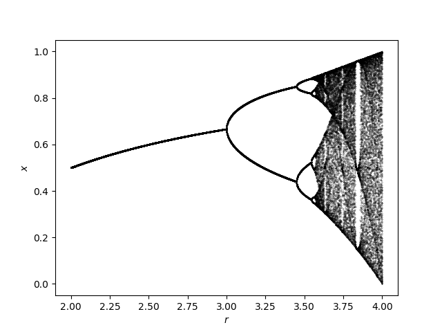
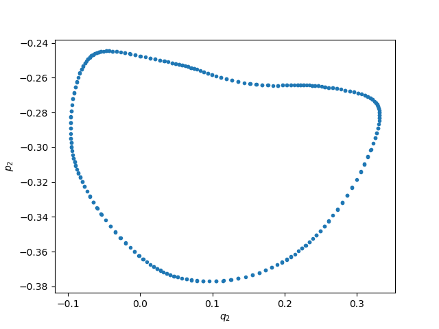
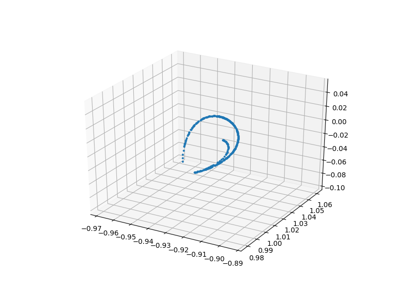
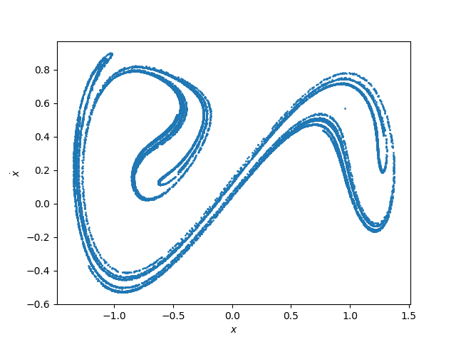
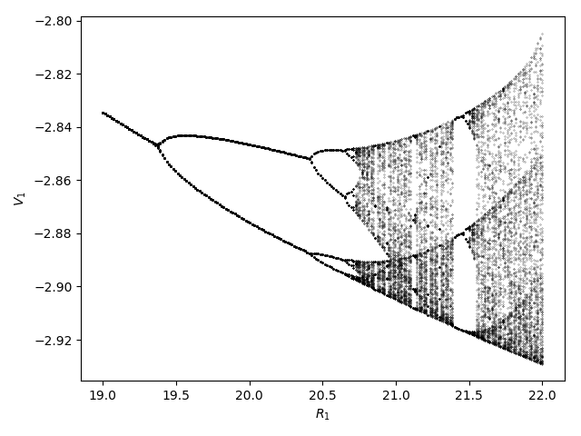

Orbit Diagrams & PSOS
Orbit Diagrams of Maps
An orbit diagram (also called bifurcation diagram) is a way to visualize the asymptotic behavior of a map, when a parameter of the system is changed
#
ChaosTools.orbitdiagram — Function.
orbitdiagram(ds::DiscreteDynamicalSystem, i, p_index, pvalues; kwargs...)
Compute the orbit diagram (also called bifurcation diagram) of the given system, saving the i variable(s) for parameter values pvalues. The p_index specifies which parameter of the equations of motion is to be changed.
i can be Int or AbstractVector{Int}. If i is Int, returns a vector of vectors. Else it returns vectors of vectors of vectors. Each entry are the points at each parameter value.
Keyword Arguments
Ttr::Int = 1000: Transient steps; each orbit is evolved forTtrfirst before saving output.n::Int = 100: Amount of points to save for each initial condition.dt = 1: Stepping time. Changing this will give you the orbit diagram of thedtorder map.u0 = get_state(ds): Initial condition. Besides a vector you can also give a vector of vectors such thatlength(u0) == length(pvalues). Then each parameter has a different initial condition.
See also poincaresos and produce_orbitdiagram.
For example, let's compute the famous orbit diagram of the logistic map:
using DynamicalSystems using PyPlot ds = Systems.logistic() i = 1 pvalues = 2:0.001:4 ics = [rand() for m in 1:10] n = 50 Ttr = 5000 p_index = 1 output = orbitdiagram(ds, i, p_index, pvalues; n = n, Ttr = Ttr) figure() for (j, p) in enumerate(pvalues) plot(p .* ones(length(output[j])), output[j], lw = 0, marker = "o", ms = 0.2, color = "black") end xlabel("\$r\$"); ylabel("\$x\$")

Notice that if you are using PyPlot, the plotting process will be slow, since it is slow at plotting big numbers of points.
The function is not limited to 1D maps, and can be applied just as well to any discrete system.
Poincaré Surface of Section
Also called Poincaré map is a technique to reduce a continuous system into a discrete map with 1 less dimension. We are doing this using the function:
#
ChaosTools.poincaresos — Function.
poincaresos(ds::ContinuousDynamicalSystem, plane, tfinal = 1000.0; kwargs...)
Calculate the Poincaré surface of section (also called Poincaré map) [1, 2] of the given system with the given plane. The system is evolved for total time of tfinal.
If the state of the system is \mathbf{u} = (u_1, \ldots, u_D) then the equation for the planecrossing is
where \mathbf{a}, b are the parameters that define the planecrossing.
In code, plane can be either:
- A
Tuple{Int, <: Number}, like(j, r): the planecrossing is defined as when thejvariable of the system crosses the valuer. - An
AbstractVectorof lengthD+1. The firstDelements of the vector correspond to \mathbf{a} while the last element is b.
Returns a Dataset of the points that are on the surface of section.
Keyword Arguments
direction = 1: Only crossings withsign(direction)are considered to belong to the surface of section. Positive direction means going from less than b to greater than b.idxs = 1:dimension(ds): Optionally you can choose which variables to save. Defaults to the entire state.Ttr = 0.0: Transient time to evolve the system before starting to compute the PSOS.warning = true: Throw a warning if the Poincaré section was empty.diffeq...: Keyword arguments propagated intoinitof DifferentialEquations.jl. Seetrajectoryfor examples.
References
[1] : H. Poincaré, Les Methods Nouvelles de la Mécanique Celeste, Paris: Gauthier-Villars (1892)
[2] : M. Tabor, Chaos and Integrability in Nonlinear Dynamics: An Introduction, §4.1, in pp. 118-126, New York: Wiley (1989)
[3] : This function is simply manipulating ContinuousCallback from DifferentialEquations.jl.
See also orbitdiagram, produce_orbitdiagram.
An example of the Henon-Heiles system using a quasi-periodic solution
ds = Systems.henonheiles([0., 0.1, 0.5, 0.]) output = poincaresos(ds, (3, 0.0), 2000.0) figure() plot(output[:, 2], output[:, 4], lw = 0.0, marker=".") xlabel("\$q_2\$"); ylabel("\$p_2\$");

Here the surface of section was the (hyper-) plane that p_1 = 0. As expected the section is 1-dimensional, because the torus the solution lives in is 2-dimensional. if we produced the PSOS for much longer times, the result would be a filled line instead of individual points.
One more example with a more complex hyperplane:
gis = Systems.gissinger([2.32865, 2.02514, 1.98312]) # Define appropriate hyperplane for gissinger system const ν = 0.1 const Γ = 0.9 # default parameters of the system # I want hyperperplane defined by these two points: Np(μ) = SVector{3}(sqrt(ν + Γ*sqrt(ν/μ)), -sqrt(μ + Γ*sqrt(μ/ν)), -sqrt(μ*ν)) Nm(μ) = SVector{3}(-sqrt(ν + Γ*sqrt(ν/μ)), sqrt(μ + Γ*sqrt(μ/ν)), -sqrt(μ*ν)) # Create hyperplane using normal vector to vector connecting points: gis_plane(μ) = (d = (Np(μ) - Nm(μ)); [d[2], -d[1], 0, 0]) μ = 0.12 set_parameter!(gis, 1, μ) figure(figsize = (8,6)) psos = poincaresos(gis, gis_plane(μ), 5000.0, Ttr = 200.0, direction = -1) plot3D(columns(psos)..., marker = "o", ls = "None", ms = 2.0);

Stroboscopic Map
A special case of a PSOS is a stroboscopic map, which is defined for non-autonomous systems with periodic time dependence, like e.g. the Duffing oscillator.
A "cut" through the phase-space can be produced at every period T = 2\pi/\omega. There is no reason to use poincaresos for this though, because you can simply use trajectory and get the solution with a certain time sampling rate:
ds = Systems.duffing(β = -1, ω = 1, f = 0.3) # non-autonomous chaotic system a = trajectory(ds, 100000.0, dt = 2π) # every period T = 2π/ω figure() plot(a[:, 1], a[:, 2], lw = 0, marker ="o", ms = 1) xlabel("\$x\$"); ylabel("\$\\dot{x}\$")

Producing Orbit Diagrams for Flows
The orbitdiagram does not make much sense for continuous systems, besides the trivial case where the system is at a fixed point. In order for orbitdiagram to have meaning one must have a map.
If only there was a way to turn a continuous system into a map... OH WAIT! That is what poincaresos does! By performing successive surfaces of section at different parameter values, one can indeed "produce" an orbit diagram for a flow.
We have bundled this process in the following function:
#
ChaosTools.produce_orbitdiagram — Function.
produce_orbitdiagram(ds::ContinuousDynamicalSystem, plane, i::Int,
p_index, pvalues; kwargs...)
Produce an orbit diagram (also called bifurcation diagram) for the i variable(s) of the given continuous system by computing Poincaré surfaces of section using plane for the given parameter values (see poincaresos).
i can be Int or AbstractVector{Int}. If i is Int, returns a vector of vectors. Else it returns vectors of vectors of vectors. Each entry are the points at each parameter value.
Keyword Arguments
printparams::Bool = false: Whether to print the parameter used during computation in order to keep track of running time.direction, warning, Ttr, diffeq...: Propagated intopoincaresos.u0 = get_state(ds): Initial condition. Besides a vector you can also give a vector of vectors such thatlength(u0) == length(pvalues). Then each parameter has a different initial condition.
Description
For each parameter, a PSOS reduces the system from a flow to a map. This then allows the formal computation of an "orbit diagram" for the i variable of the system, just like it is done in orbitdiagram.
The parameter change is done as p[p_index] = value taking values from pvalues and thus you must use a parameter container that supports this (either Array, LMArray, dictionary or other).
See also poincaresos, orbitdiagram.
For example, we will calculate the orbit diagram of the Shinriki oscillator, a continuous system that undergoes a period doubling route to chaos, much like the logistic map!
ds = Systems.shinriki([-2, 0, 0.2]) pvalues = range(19, stop = 22, length = 201) i = 1 plane = (2, 0.0) tf = 200.0 p_index = 1 output = produce_orbitdiagram(ds, plane, i, p_index, pvalues; tfinal = tf, Ttr = 200.0, direction = -1, printparams = false) figure() for (j, p) in enumerate(pvalues) plot(p .* ones(output[j]), output[j], lw = 0, marker = "o", ms = 0.2, color = "black") end xlabel("\$R_1\$"); ylabel("\$V_1\$") tight_layout()
┌ Warning: `ones(a::AbstractArray)` is deprecated, consider `fill(1, size(a))`, `fill!(copy(a), 1)`, or `fill!(similar(a), 1)`. Where necessary, use `fill!(similar(a), one(eltype(a)))`. │ caller = top-level scope at none:2 └ @ Core ./none:2
